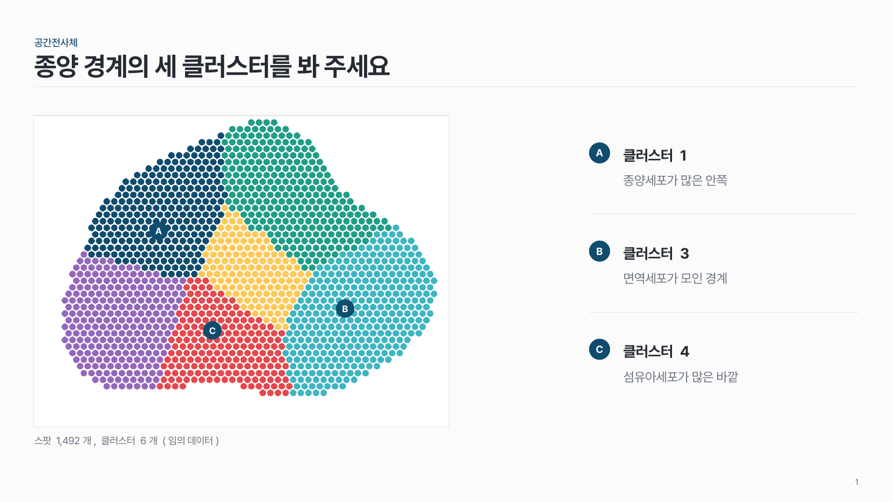

홈 › 장의 틀
장의 틀
표지·목차·결론 줄처럼 장의 뼈대를 잡고 싶어요
이럴 때
어떤 내용이든 담기 전에 장의 뼈대를 정할 때예요. 표지, 목차, 간지, 두 갈래 목록, 마무리 같은 틀과, 본문 아래 결론 줄, 본문을 좌우로 나누는 법이요.
들어가는 것
- 표지: 발표 구분, 제목(두 줄 이내), 부제, 날짜·발표자.
- 목차: 항목 7개 이내.
- 본문: 위에 작은 섹션 이름 + 큰 제목(결론 문장) + 얇은 선 하나, 아래에 내용.
- 결론 줄: 맨 아래에 한 줄.
강조할 것
본문 장에서는 결론 한 곳. 결론 줄의 강조 칸이나 2열의 아래 강조 칸 가운데 하나만 써요.
팁
- 바깥 여백은 네 변 모두 1.3cm로 고정해요. 슬라이드 마스터에 안내선을 맞춰 두면 편해요.
- 위쪽은 작은 회색 섹션 이름 + 제목 + 얇은 선. 진한 색 띠를 깔지 않아요.
- 시선은 위에서 아래로. 할 말(제목·소제목)이 위, 근거가 아래, 결론은 맨 아래 칸.
- 한 장 안에서 정렬을 섞지 않아요. 왼쪽 정렬이면 끝까지 왼쪽.
- 칸 사이 간격은 한 값으로 통일해요.
- 오른쪽 아래에 슬라이드 번호를 넣어요. 질문받을 때 편해요.
추천 패턴

레이아웃 layouts
본문 말고 장의 틀: 표지, 목차, 간지, 2열, 마무리. 자리가 정해져 있어 내용만 넣으면 돼요.

결론 줄 conclusion
본문 맨 아래에 얇은 선 하나 + 결론 문장. 필요하면 왼쪽에 이름, 오른쪽에 강조 칸.

좌우 나눔 split
본문을 넓은 쪽과 좁은 쪽으로 나눠요. 2:1 또는 1:1, 좁은 쪽은 왼쪽이나 오른쪽.